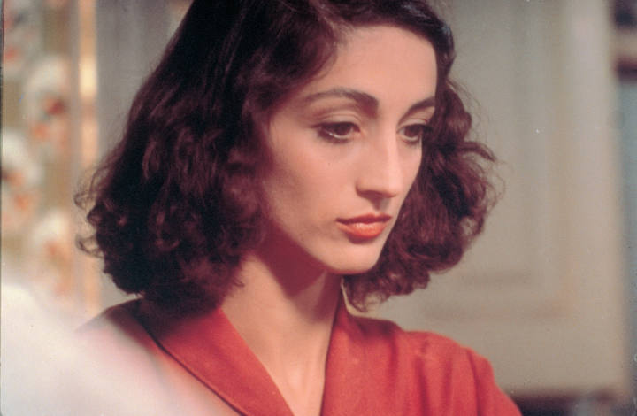

Personatges
L'obra "La Plaça del Diamant" destaca gràcies a la seua quantitat de personatges ben desarrollats que li confereixen a l'obra una gran profunditat i riquesa:
Personatges Principals

Colometa (Natalia dels Trèmols) Protagonista de la història. La seva evolució com a personatge és complexa i rica en matisos, reflectint les intricades
experiències que viu al llarg de la narrativa. Abans es presenta com a noia innocent i somiadora, amb una visió idealista de l'amor i la vida però posteriorment
la seva personalitat es veu sotmesa a una sèrie de desafiaments quan la guerra civil esclata i a mesura que avança la història, Colometa es converteix en un símbol
de resistència i adaptabilitat enmig de l'adversitat
Quimet Marit de Colometa, és un personatge complex amb el qual es casa durant la República. Té una visió tradicional i conservadora de la vida. És un home amb esperances
i somnis. La seva implicació amb grups polítics i les conseqüències del conflicte tenen un impacte profund en la seva personalitat. Esdevé un home complex, amb les seves
pròpies lluites i desafiaments, i la seva relació amb Colometa es complica pel pes dels esdeveniments històrics.
L'avi (Pere) L'Avi És l'avi de Colometa, una figura important en la seva vida que li proporciona suport emocional i consell. La seva mort afecta profundament Colometa i
contribueix a la seva pròpia reflexió sobre la vida i la mort.
Núria Amiga de Colometa, representa la companyia i el suport emocional en diversos moments de la vida de la protagonista. La seva relació simbolitza l'aliança entre les dones
enmig de les adversitats.
Altres personatges
L'estalviat (Paulí) germà de Colometa, és un personatge que es converteix en sacerdot. La seva vida religiosa contrasta amb la de la seva germana, que es veu afectada pel context històric
i polític.
La Lola Amiga de Colometa des de l'adolescència, és una dona vital i carismàtica que també experimenta les vicissituds de la vida, incloent-hi el matrimoni i les conseqüències de la guerra.
La senyora Rovira propietària de la botiga on treballa Colometa, la senyora Rovira és una dona de negocis pragmàtica que influeix en la vida de la protagonista. La seva relació amb Colometa
evoluciona a mesura avança l'obra.
La Carmeta Veïna de Colometa, la Carmeta és una dona amb una vida difícil que exemplifica les tensions socials i les conseqüències de la guerra. La seva amistat amb Colometa és significativa
i mostra la solidaritat entre les dones en temps difícils.
La senyora Enriqueta Mestressa de Colometa durant un temps, la senyora Enriqueta simbolitza la classe alta i les diferències socials. La seva relació amb Colometa ofereix una perspectiva
sobre les divisions de classe en la Barcelona de postguerra.